A medium hybrid platform for inspection, observation, survey support and payload-oriented mission growth.
适合巡检、观测、测绘支持和多任务挂载扩展的中型混合平台。
Products
产品体系
The current portfolio spans medium to micro platforms and can be matched against depth range, operating space, observation demand, payload direction and delivery model.
当前产品体系覆盖中型到微型平台，可围绕水深范围、作业空间、观测需求、挂载方向与交付方式进行选型。
Start with depth, space and payload direction before moving into platform detail.
先看水深、空间与挂载方向，再进入平台详情。
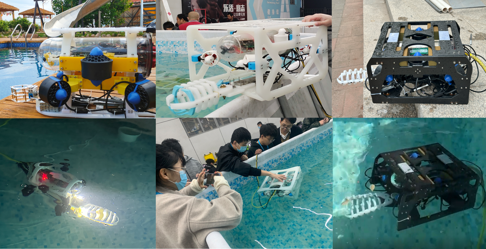
Overview
总览索引
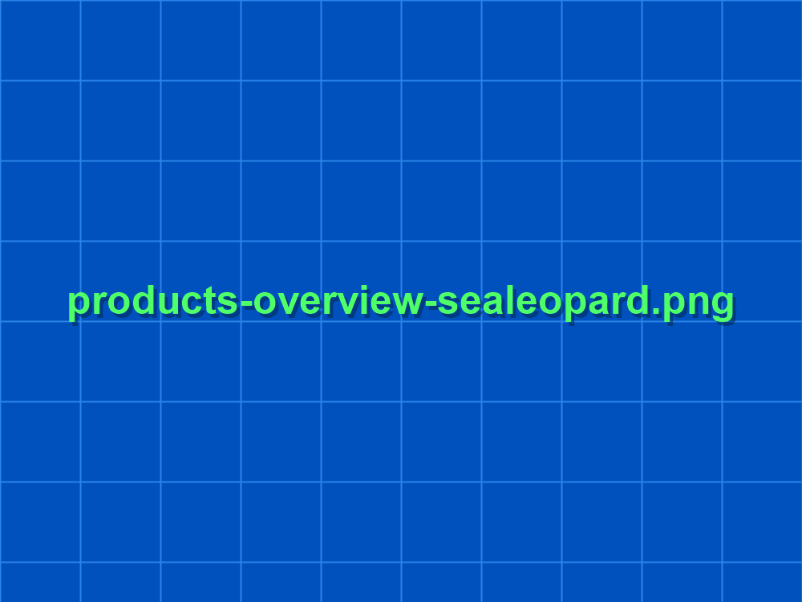
100 m-class design depth for complex waters and payload growth.
100m 级设计深度，适合复杂水域与多挂载方向。
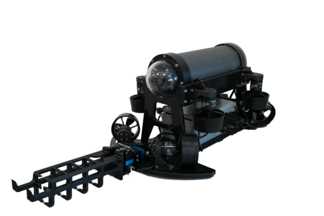
For fine attitude control, experiments and multi-angle observation.
适合精细姿态控制、多角度观测与实验支持。
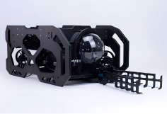
Six-thruster base with upgrade path toward eight-thruster work logic.
六推基础版，可升级为八推作业逻辑。
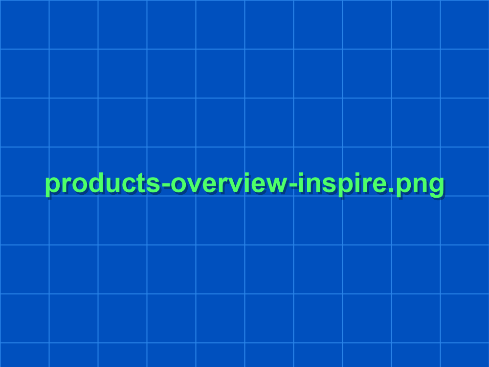
Small, fast and suitable for short-duration shallow-water review.
轻便、快速，适合短时浅水摸查任务。
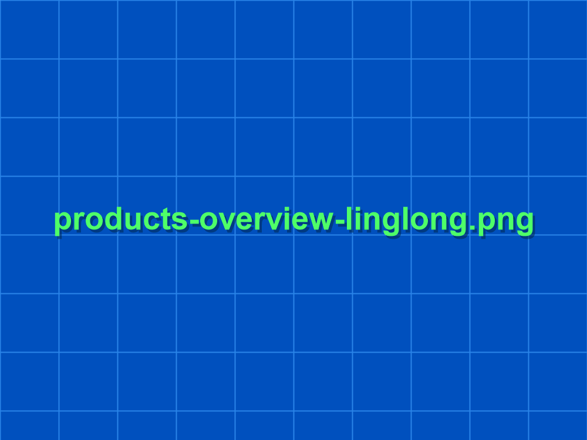
10 m-class shallow-water platform for culverts, shafts and boxes.
10m 级浅水平台，适合涵洞、井室和箱涵空间。
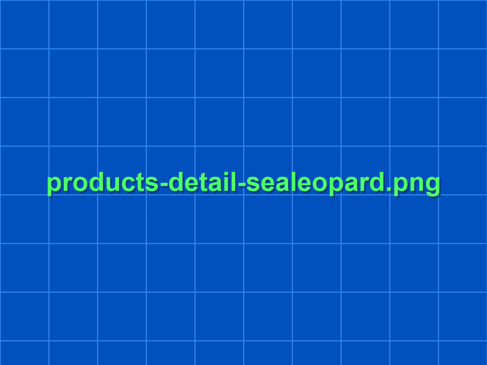
SeaLeopard
Built for complex-water inspection, mission stability and stronger payload growth around reservoirs, dams, nearshore structures and environmental monitoring work.
面向复杂水域巡检、任务稳定性和更强挂载扩展需求，适用于库区、坝体、近岸构筑物与环境监测方向。
A medium hybrid platform for inspection, observation, survey support and payload-oriented mission growth.
适合巡检、观测、测绘支持和多任务挂载扩展的中型混合平台。
Binocular vision, industrial PC, edge compute units and mission-specific support frames. Reserve R&D directions are discussed separately and not presented as default promise.
可围绕双目视觉、工控机、边缘计算单元和专项任务支架展开增配。研发储备方向单独沟通，不作为默认承诺。
Typical tasks: structural inspection, project observation, complex-water navigation support and multi-sensor mission packages.
典型任务：结构巡检、项目观测、复杂水域路径辅助与多传感任务包。
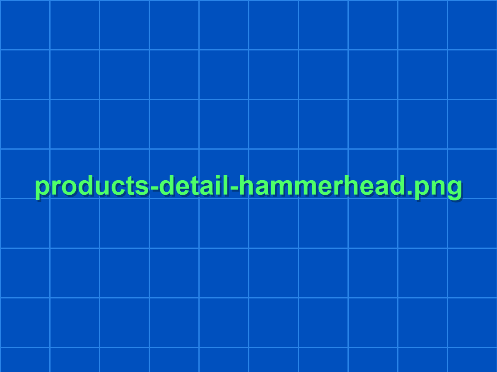
Hammerhead
Designed for high maneuverability, multi-angle observation, fine attitude control and underwater experiment support.
面向高机动、多角度观测、精细姿态控制和水下实验支持的通用平台。
A compact platform for fine observation, underwater test work, scientific experiments and engineering review tasks.
适合精细巡检、水下实验、科研观测和工程观察任务的小型高机动平台。
Custom task frames, external modules and special collection attachments. Multi-task data collection growth stays within project discussion.
可围绕定制任务支架、外挂模块和专项采集附件展开。更复杂的数据采集协同按项目沟通。
Typical tasks: high-demand observation, experiment support, multi-angle target review and compact deep-water inspection.
典型任务：高要求观测、水下实验支持、多角度目标复核与小型深水巡检。
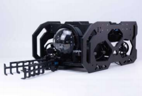
Challenge
A close-range work platform with six-thruster base configuration and an upgrade path toward eight-thruster mission logic for waterworks, pump stations and gate chambers.
以六推进基础版为主、可升级八推逻辑的近距作业平台，适用于水工构筑物、泵站与闸室等任务。
For close-range inspection, stable hovering, directional review and light accessory growth around engineering tasks.
适合近距巡检、稳定悬停、定向观察和围绕工程任务展开的轻作业扩展。
Eight-thruster upgrade package, custom interface boards and special mission accessories for light work scenarios.
可围绕八推升级包、特殊接口板和专项任务附件展开轻作业场景增配。
Typical tasks: hydraulic structure review, pump-station inspection, gate chamber observation and stable close-range visual confirmation.
典型任务：水工构筑物复核、泵站巡检、闸室观察和稳定的近距状态确认。
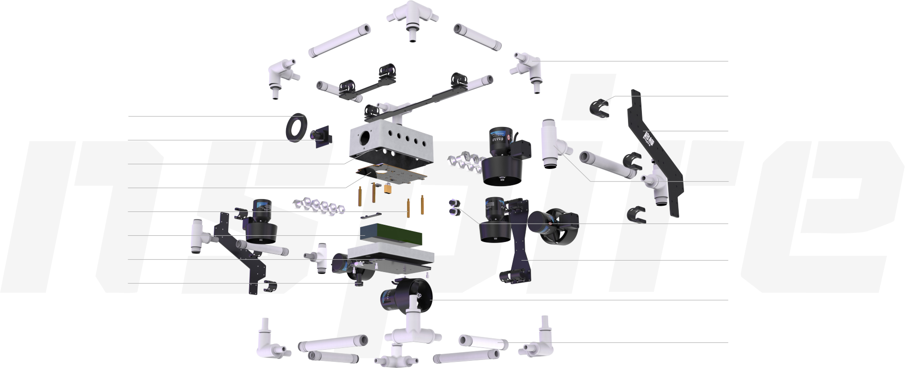
Inspire
A fast-entry platform for shallow-water pilot checks, short-duration review tasks and trial deployment in ponds, pits, tanks and nearshore shallows.
适用于池体、泵坑、试验池和近岸浅水区的快速进入平台，用于浅水先导观察和短时排查任务。
For shallow-water pilot checks, initial judgement, short-duration review and low-threshold field entry.
适合浅水先导排查、基础判断、短时复核和低门槛任务进入。
Quick-release accessories, collision-protection parts and shallow-water dedicated detection modules can be added around site needs.
可围绕快拆附件、防碰结构和浅水专项检测模块进行现场适配。
Typical tasks: shallow pilot checks, pond review, short-duration validation work and fast site entry.
典型任务：浅水先导排查、池体复核、短时验证任务和快速现场进入。
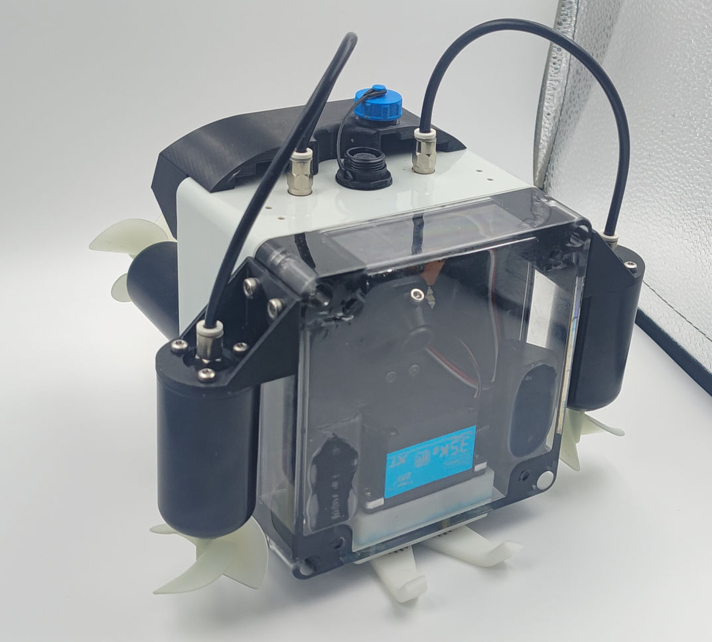
Linglong
A constrained-access unit for culverts, gate slots, shafts, box channels and other shallow-water industrial spaces that larger platforms cannot enter easily.
适合涵洞、闸门槽、井室、箱涵和其他浅水工业空间，是大平台不便进入时的受限空间观测单元。
For close visual review, anomaly confirmation and rapid entry into narrow, shallow or repetitive inspection spaces.
适合近距视觉复核、异常点确认和进入狭窄浅水空间开展快速排查。
Collision-protection structures, narrow-space support brackets and task-specific lightweight accessories.
可围绕防碰结构、狭窄空间支架和定制轻量附件进行项目化扩展。
Typical tasks: culvert review, shaft inspection, shallow anomaly confirmation and constrained-space pilot checks.
典型任务：涵洞复核、井室检查、浅水异常点确认与受限空间先导排查。
Support Logic
选型补充
Most projects should begin with a usable standard platform, then expand only where sensing, support structure or delivery mode actually demands it.
大多数任务应先从可直接使用的标准平台开始，只在传感、支架或交付方式真正需要时再向外扩展。
Use the current direct-delivery platform as the first matching base.
以当前可直接交付的平台作为第一轮匹配基础。
Add sensing, lighting, sampling or support frames only where the mission needs them.
仅在任务真正需要时再增加传感、照明、取样或支架。
Purchase, rental or mission support should follow task cycle and field intensity.
采购、租赁或任务支持应根据任务周期与现场强度决定。
Share depth range, entry size and payload direction first, then we can narrow the platform path quickly.
先说明水深范围、入口尺寸和挂载方向，再快速收敛平台选择。